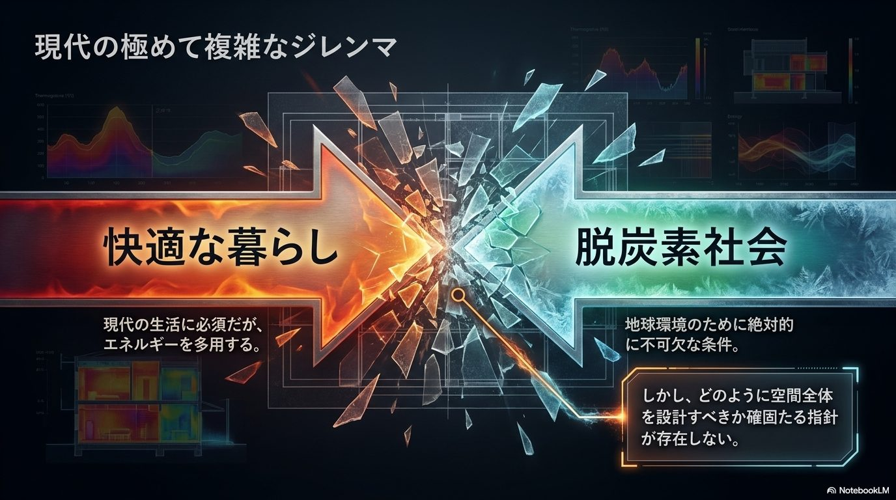
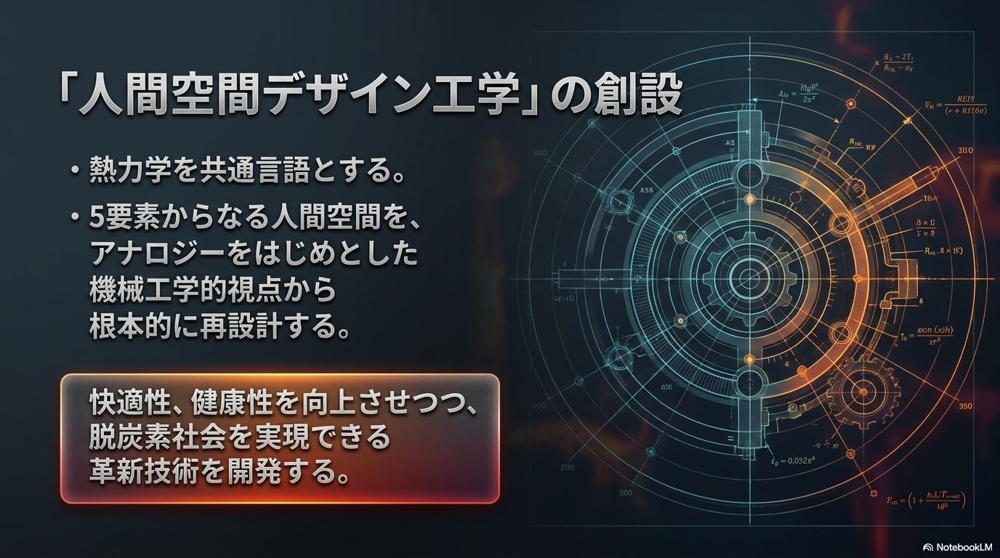
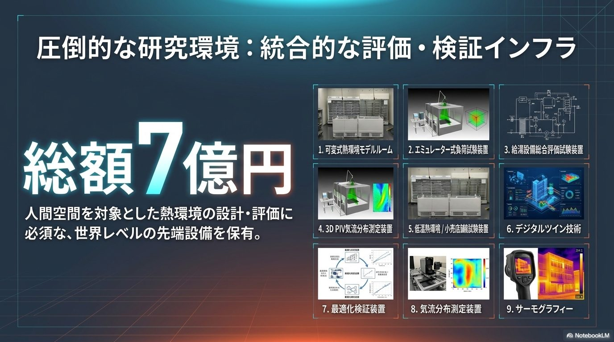

An accessible introduction to our mission and overall picture, designed so that first-time visitors can understand us with confidence.
Achieving carbon neutrality by 2050 is a major mission entrusted to science and technology. Yet the future we should be aiming for is not simply a society that reduces energy consumption and CO₂ emissions. What is required is a sustainable society that simultaneously enhances people's comfort, health, safety, and quality of life.
For more than fifty years, our research group has worked to understand different energy conversion systems—electrical, mechanical, thermal, and more—within a unified analytical framework based on circuit theory. Beyond theory and basic research, we have also developed real devices and systems, translating our findings into technologies that serve society.
Building on the system analysis and thermal engineering expertise we have cultivated, we are now taking on the challenge of establishing a new academic field, "Human Space Design Engineering," that connects architecture, mechanical engineering, information and control, energy, and human science. Using heat as a common language, we treat the spaces in which people live, work, learn, and move as a single system, and we are creating new design principles that achieve both comfort and health alongside energy conservation and decarbonization.
It is you—the students of today—who will lead society in 2050. We want to work together with those of you who wish to cross the boundaries of existing disciplines, take on challenges that have no established answers yet, and design the human spaces and society of the future with your own hands, to build new scholarship and technology together.
Kiyoshi Saito, Waseda University
This is the ultimate mission of Saito Laboratory. The era of pursuing the performance of individual components alone—an air conditioner here, an insulation material there—is over. What the future demands is the integration of five elements—architecture, energy, mechanics, information and control, and human beings—to optimize the space itself as a single, unified system.


We have boldly expanded the core knowledge of mechanical engineering to establish a new field: "Human Space Design Engineering." Using thermodynamics as a common language, we fundamentally redesign human space—composed of five elements—from a mechanical-engineering perspective built around analogy and related methods. Our goal is to develop innovative technologies that enhance comfort and health while realizing a decarbonized society.
Just like the Media Lab, our Center aims to spark innovation that transcends conventional disciplinary boundaries. We aspire to become a hub of innovation that overturns the concept of spatial design, spreading from Japan to the world. In an international research environment that draws members from overseas, we welcome those of you who wish to join colleagues from around the world in tackling research on a truly large scale.
Our theoretical work and basic research are immediately validated in real space using a suite of facilities built within the laboratory, representing a total investment of approximately JPY 700 million. An environment that tightly fuses simulation (cyber) with reality (physical) is producing research results that lead the world.

| No. | Facility |
|---|---|
| 1 | Variable Thermal Environment Model Room |
| 2 | Emulator-Type Load Test Apparatus |
| 3 | Comprehensive Water Heating Equipment Evaluation Test Apparatus |
| 4 | 3D PIV Airflow Distribution Measurement System |
| 5 | Low-Temperature Thermal Environment / Retail Store Test Apparatus |
| 6 | Digital Twin Technology |
| 7 | Optimization Verification Apparatus |
| 8 | Airflow Distribution Measurement System |
| 9 | Thermography |
169-8555
3-4-1 Okubo, Shinjuku-ku, Tokyo
Waseda University Bldg. 58, Main Office: Room 210
Fukutoshin Line — Nishi-Waseda Station, 0-minute walk
JR — Takadanobaba Station, Toyama exit, 10-minute walk
JR — Shin-Okubo Station, 10-minute walk
Tozai Line / Seibu-Shinjuku Line — Takadanobaba Station, 12-minute walk
TEL: 03-5286-3259
FAX: 03-5286-3259
Go to the Contact Form